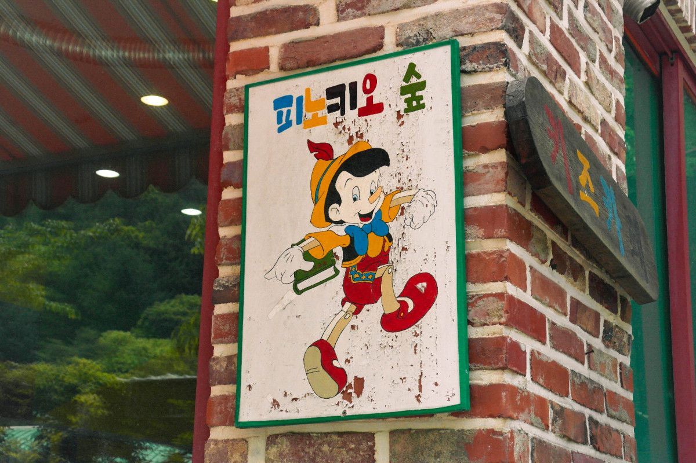
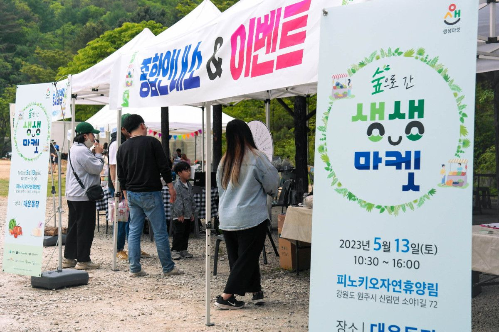
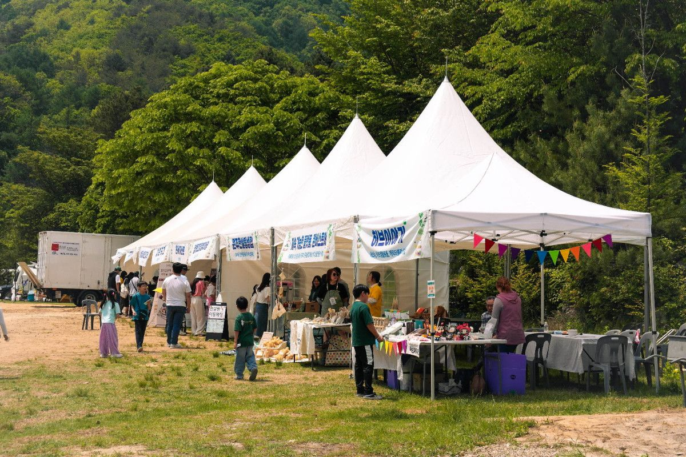
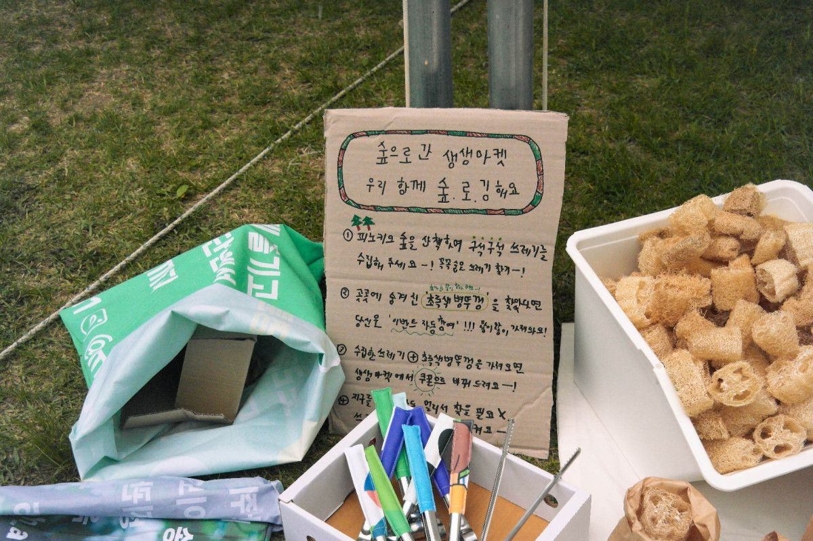
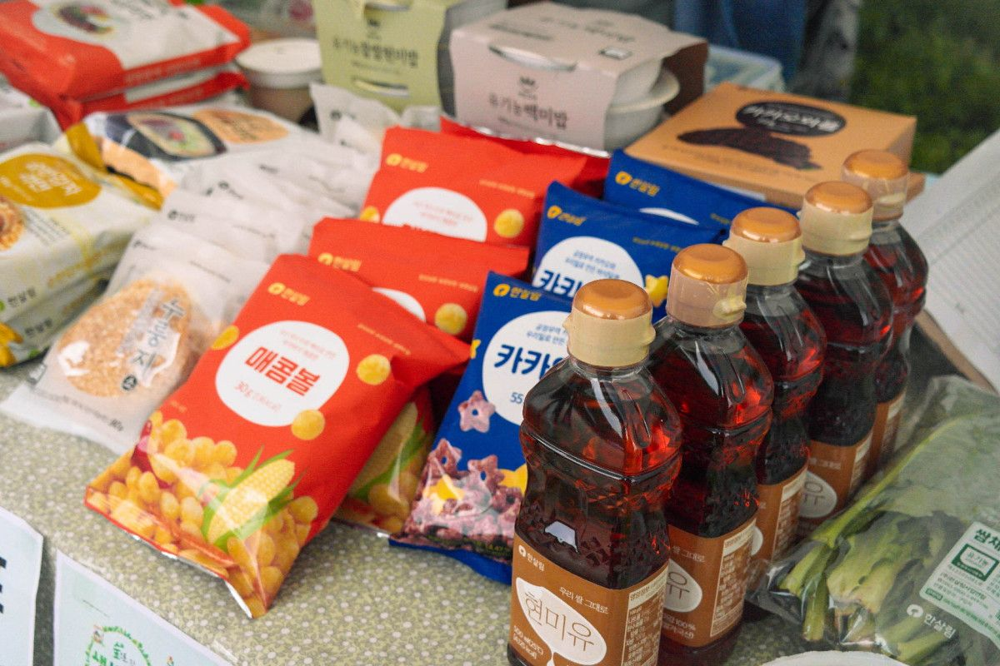
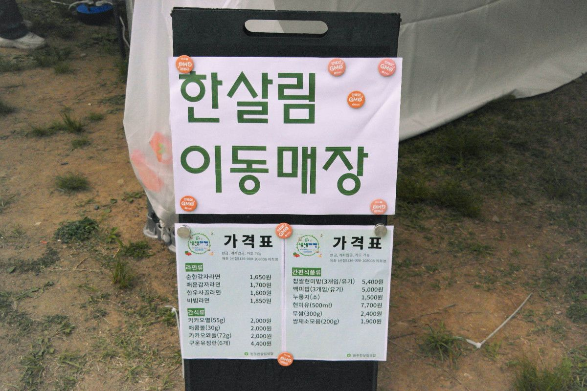
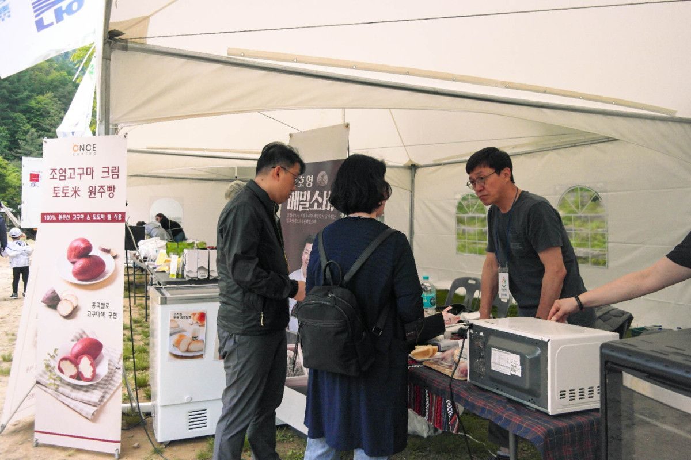
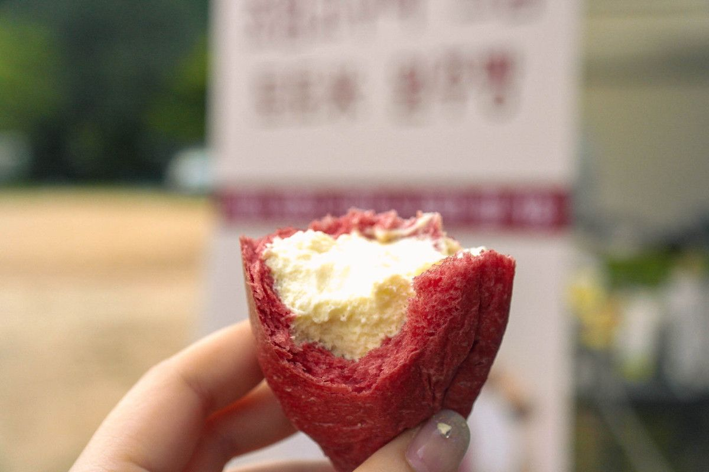
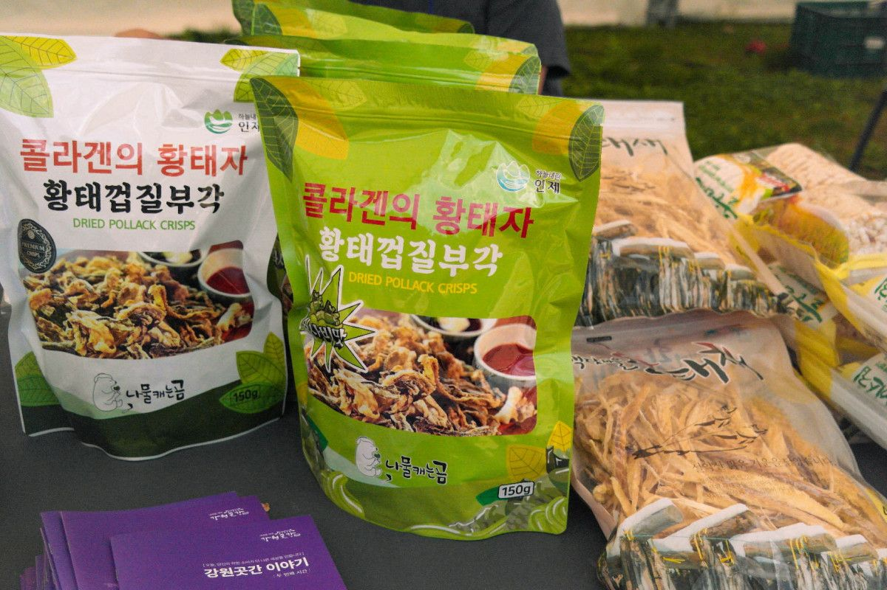
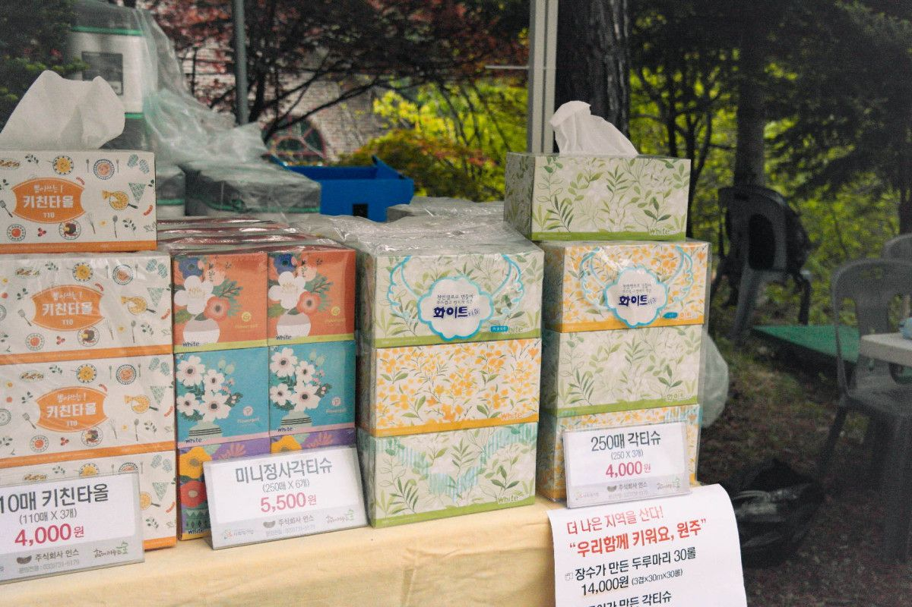

5월 13일 토요일, 10시 30분부터 4시까지 치악산 피노키오자연휴양림에서 생생마켓이 열렸어요.
날씨가 너무 좋은데 숲향기까지 나니 정말 나들이 온 기분이었어요.
-
퀸비스토어에서 준비한 친환경 제품들과 플로깅 활동
생생마켓에서 만난 한살림 제품들(사진 속 현미유는 매장에서도 사기 힘든 아이템)
농업회사법인 태성에서는 잡곡을 필요한 만큼 구매할 수 있도록 100g단위로 판매했어요.
낭만섬에서는 원주 주제의 다양한 기념품을 선보였습니다! 귀여운 표정의 감자쿠션과 원주성냥이 있었습니다.
플라워럼프에서는 '식물퀴즈'를 준비했어요. 퀴즈도 맞추고 선물도 받아가는 이벤트! 왠지, 피노키오숲 캠핑장과 잘 어울리네요.
커피팜페에서는 캠핑용, 휴대용 설거지 비누를 판매했습니다. 휴대하기 편한 스틱형 비누인데, 캠핑할때 완전 꿀템아닌가요?!
Let's 플로깅! 플로깅은 산책이나 조깅을 하며 쓰레기를 줍는 활동을 말해요.
퀸비스토어가 생생마켓 참여자 대상으로 오후1시, 피노키오숲 플로깅 활동을 진행했습니다.
강원곳간에서는 강원도의 다양한 상품들을 소개했습니다. 나물캐는곰의 황태껍질부각 추천템이에요
온세까세로는 크림빵과 정호영 모밀소바를 판매했는데요, 마켓컬리나 카카오메이커스, 윙잇에서도 만나보실 수 있어요! 요즘은 조엄고구마를 활용해 조엄고구마크림빵이 핫하다고 해요
원단좋은 티슈, 인스는 다양한 티슈를 판매했어요. 특히 인스 티슈선물세크는 여러 티슈가 모인 종합선물세트에요! 집들이선물로 좋아요.
나언심리상담소에서는 아이들 비즈팔찌만들기 체험을 운영했습니다.
생생마켓 종합안내소에서는 룰렛돌리기 이벤트가 열렸어요. 5,000원 이상 구매하고 스티커 받아 쿠폰으로 룰렛을 돌릴 수 있었답니다









